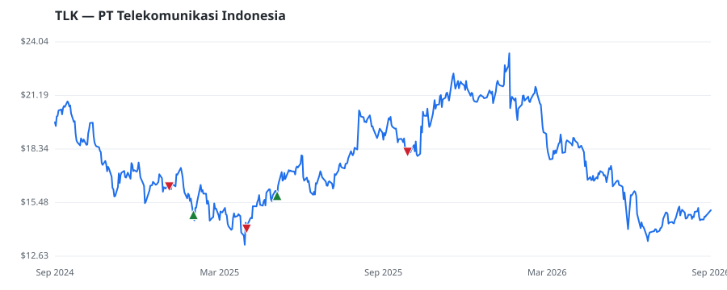

bullish · bearish · n/a — dots: price>SMA10 · SMA10>SMA50 · SMA50>SMA200 · up>down volume (20d)
Other · large cap
Members who bought TLK earned a dollar-weighted -8.2% from their disclosure dates, versus +7.1% for the S&P 500 over the same holding windows (-15.3% alpha).

▲ green = a disclosed purchase · ▼ red = a disclosed sale (plotted on disclosure date)
PT Telkom Indonesia (Persero) Tbk is the integrated telecommunications provider in Indonesia. It also provides a wide range of other communication services, including telephone network, interconnection services, multimedia, data and internet communication-related services, satellite transponder leasing, leased line, intelligent network and related services, cable television, and VoIP services. It derives revenue from product lines: Mobile, Consumer, Enterprise, WIB, and Others. The firm has identified five reportable segments, namely B2C, B2B Infra, B2B ICT, International, and Others. The firm · website
| Member | Chamber | Out-performer | Disclosed buys $ | Return on buys |
|---|---|---|---|---|
| Josh Gottheimer | house | — | $32K | -8.2% |
Disclosed $ figures are bracket midpoints — filings report ranges (e.g. $1,001–$15,000), not exact amounts.
| Fund | Fund alpha vs SPY | Position | % of book |
|---|---|---|---|
| BAROMETER CAPITAL MANAGEMENT INC. | +16% | $5M | 1.4% |
| HIMENSION CAPITAL (SINGAPORE) PTE. LTD. | +62% | $2M | 0.2% |
| North of South Capital LLP | +21% | $1M | 0.1% |
Hedge data: SEC EDGAR 13F · ranked funds beat SPY in >50% of their quarters · fund alpha = mirror-portfolio return minus SPY.